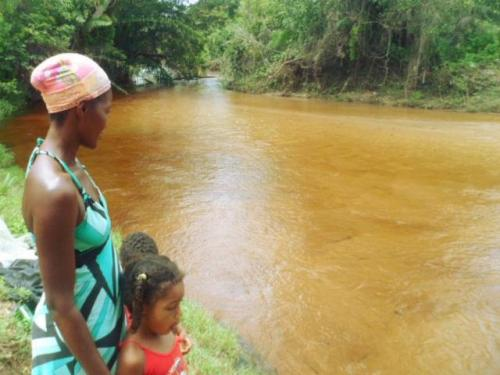

As comunidades quilombolas são grupos com identidade cultural própria e se formaram por meio de um processo histórico que começou nos tempos da escravidão no Brasil. Elas simbolizam a resistência a diferentes formas de dominação. Essas comunidades mantêm
forte ligação com sua história e trajetória, preservando costumes e cultura trazidos por seus antepassados.
Em 1995, no “I Encontro Nacional das Comunidades Negras Rurais Quilombolas”, realizado durante a Marcha Zumbi dos Palmares é criada a Comissão Nacional Provisória das Comunidades Rurais Negras Quilombolas. Nesse período, a organização do I Encontro tinha
conhecimento da existência de quatrocentas e doze comunidades, e a partir disso foi pensada a estrutura da Comissão Nacional. Alguns Estados presentes ao Encontro e traziam um histórico de articulação e mobilização bastante significativo.
Dentre esses, destacam-se o Maranhão, que já havia promovido o 3º Encontro das comunidades quilombolas desse Estado, o Pará, que na região do Rio Trombetas possuía uma associação bastante atuante, a ARQMO, e Rio das Rãs, na Bahia, que
trazia um histórico de luta pelo seu território. A Comissão Nacional nasce com o objetivo de mobilizar as comunidades nos vários Estados da Federação.
Ao longo dos 20 anos de existência a CONAQ realizou 04 encontros nacionais:
17 a 20 de novembro de 1995 em Brasília – DF;
29 de novembro a 02 de dezembro de 2000 em Salvador – BA;
M03 a 07 de dezembro de 2003 em Recife – PE
03 a 06 de agosto de 2011 no Rio de Janeiro – RJ
22 a 26 de Maio de 2016 em Belém – PA.

Comunidade de Iúna, Lençóis/BA
Território quilombola de Tijuaçu/BA
Comunidade Quilombola Itamatatiua/MA
Atualmente, o Estado da Bahia, juntamente com o Maranhão, possui maior concentração de comunidades quilombolas no Brasil. São mais de 500 comunidades somente na Bahia, das quais 381 já foram certificadas pela Fundação Cultural Palmares, órgão do Ministério
da Cultura. Portanto, é estratégico para o governo da Bahia construir e executar uma política estadual de promoção de direitos à terra.... para as comunidades quilombolas.
Mapa das comunidades
A Fundação Palmares já concedeu certificação a 2471 comunidades remanescentes de Quilombos. A certificação da Fundação é o primeiro passo para titularização da terra, que é feito pelo Instituto Nacional de Colonização e Reforma Agrária (Incra).
Veja no mapa o número de territórios e comunidades certificados pela Fundação Palmares em cada estado:
Comunidade
Território
Nº habitantes
Município/UF
O estado com maior número de territórios quilombolas titulados pelo Incra é o Pará, com 60, seguido do Maranhão, com 39. Os estados de Goiás, Mato Grosso, Minas Gerais e Rondônia possuem apenas 1 território titulado e outros 9 estados e o Distrito Federal
não possuem nenhum.
Contato
Quer entrar em contato com a equipe do "Quilombos do Brasil?"
Deixe-nos uma mensagem!